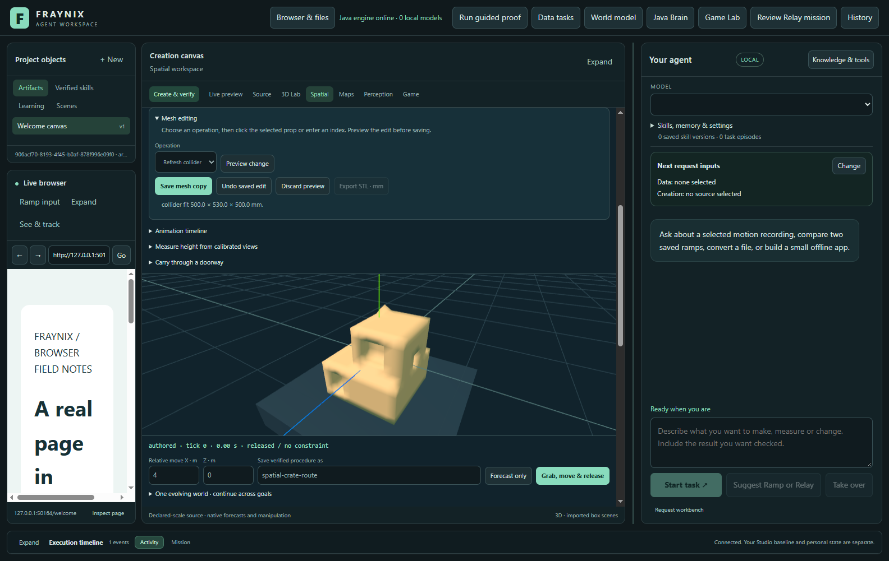
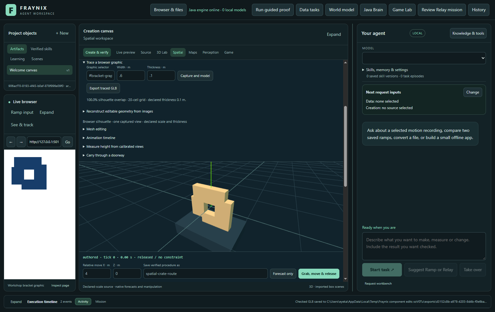

Edit components and model a browser reference
Move vertices, edges and faces, refit the collider and undo saved edits. Turn a captured browser graphic into a checked, editable silhouette.
Blender checked the 530 mm fitted box and returned a further mesh edit. A browser capture produced a silhouette model whose overlap improved from 83.7% to 100% on the fixture.

Fraynix previews the fitted collider

The browser graphic and its checked 3D outline
The actual retained browser crop
System files
Open source